A inteligência artificial faz parte dos estudos de ciências da computação. Suas diversas ramificações tentam desenvolver mecanismos e dispositivos tecnológicos que possam simular o raciocínio humano.
O objetivo central dos estudos sobre a inteligência artificial é fazer com que os computadores possam "pensar" como os humanos, criando análises, raciocinando, compreendendo e obtendo respostas para diferentes situações.
Boston Dynamics
Boston Dynamics é uma empresa de engenharia robótica que ficou famosa pela construção de robôs avançados, os quais possuem comportamentos notáveis como: mobilidade, agilidade, destreza e velocidade. São robôs construídos com finalidade militar, geralmente financiados pela DARPA, agencia do Departamento de Defesa do governo federal dos EUA, responsável pelo desenvolvimento de tecnologias para fins militares.
O objetivo da companhia, revela a publicação, é ser no mundo dos robôs o que o Android foi no mundo dos sistemas operacionais mobile, ou seja, oferecer soluções dinâmicas e versáteis para diversas necessidades.
Robôs
SpotMini
Pesando 30 quilos e com autonomia de operação estimada em 90 minutos antes de recarregar as baterias, o cão robótico pode ser operado remotamente e também agir de forma autônoma utilizando as várias câmeras que carrega consigo. O desenvolvimento do SpotMini foi pensado para que ele possa agir dentro de escritórios, por motivos profissionais, ou mesmo em casa.
Um recurso que deverá facilitar a comercialização do robô é a possibilidade de personalizá-lo para diferentes usos. Além do seu formato inicial, ele poderá ter novas partes anexadas pelas empresas que o adquiram, como um braço articulado extra.
Sandflea
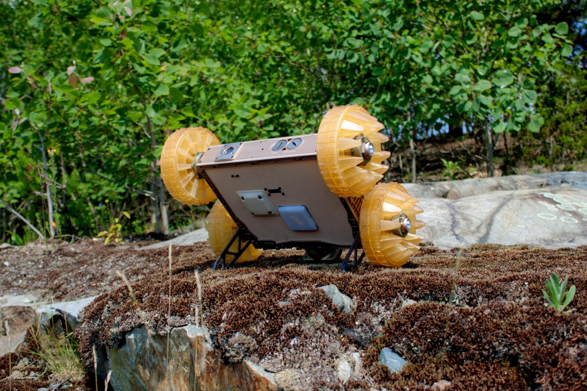
Sand Flea é um pequeno robô com 4 rodas e um poderoso salto. Ele anda como um carro em terreno plano, mas pode saltar 10 m no ar para pular obstáculos. Isso é alto o suficiente para pular sobre uma parede composta, para o telhado de uma casa, subir um lance de escadas ou entrar em uma janela do segundo andar.
O robô usa suas rodas como giroscópios para permanecer nivelado durante o vôo para que o operador tenha uma visão clara da câmera a bordo e para garantir um pouso suave nas quatro rodas. Sand Flea pode pular cerca de 25 vezes com uma carga. A Boston Dynamics desenvolveu o Sand Flea com financiamento da Força de Equipamento Rápido do Exército dos EUA, DARPA e do Sandia National Laboratory.
O SandFlea está atualmente fora de produção.
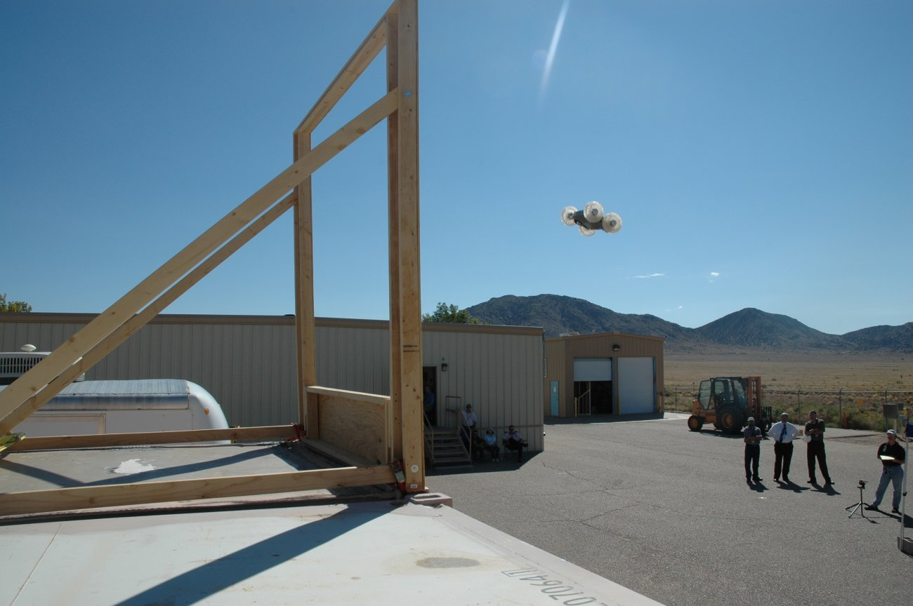
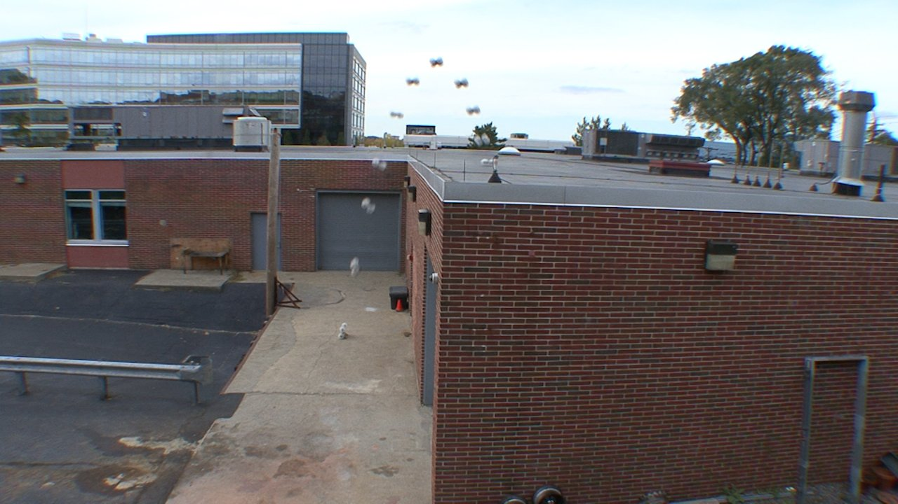
Atlas
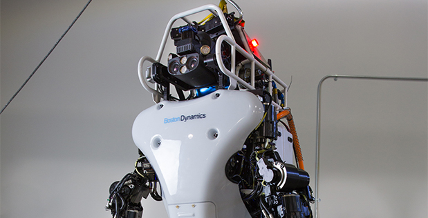
Atlas é o mais recente em uma linha de robôs humanóides avançados que esta sendo desenvolvido. O sistema de controle da Atlas coordena os movimentos dos braços, tronco e pernas para alcançar a manipulação móvel em todo o corpo, expandindo enormemente seu alcance e espaço de trabalho. A capacidade do Atlas de se equilibrar durante a execução de tarefas permite que ele trabalhe em um grande volume, ocupando apenas uma pequena área.
O hardware Atlas aproveita a impressão 3D para economizar peso e espaço, resultando em um robô compacto, notável com alta relação de resistência-peso e um espaço de trabalho drasticamente grande. A visão estéreo, o sensor de alcance e outros sensores dão à Atlas a capacidade de manipular objetos em seu ambiente e viajar em terrenos acidentados. O Atlas mantém seu equilíbrio quando empurrado e pode se levantar se ele tombar.
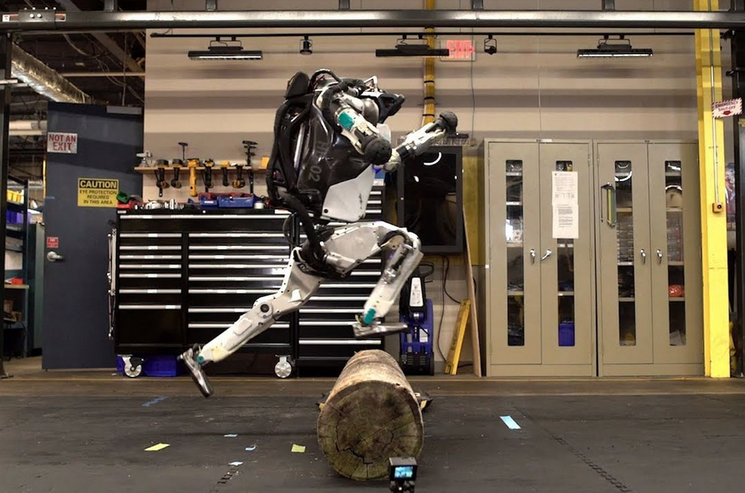
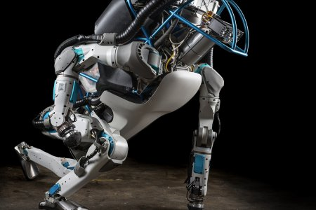
WildCat
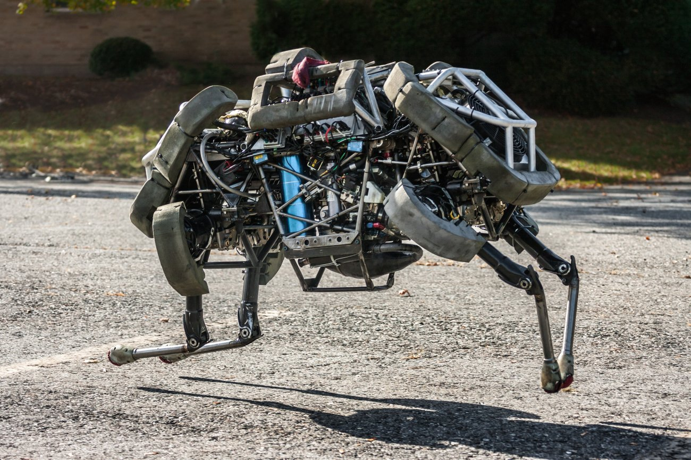
O robô WildCat é o robô quadrúpede de corrida livre mais rápido do mundo, rodando a 32 km / h. O recorde anterior era de 21 km / h, estabelecido em 1989 no MIT.
O WildCat é alimentado por um motor de queima de metanol que aciona um sistema de acionamento hidráulico (e faz barulho). O robô usa uma variedade de andamentos, incluindo trote, andando e galopando para manter o equilíbrio enquanto corre e manobra em um terreno relativamente plano. O computador de bordo utiliza algoritmos de controle dinâmico e uma variedade de sensores para controlar e estabilizar o movimento de corrida. Ele usa um conjunto de buscadores de alcance a laser para medir com precisão a altura e a atitude do robô acima do solo.
O sistema de controle que estabiliza o WildCat foi primeiramente desenvolvido em Cheetah, um protótipo de laboratório que rodou 48 km / h, mais rápido do que Usain Bolt. (Cheetah correu dentro de casa em uma esteira sem carga de vento, foi obrigado a se mover em um avião e foi alimentado por uma fonte de alimentação remota muito grande.)
O desenvolvimento do WildCat foi financiado pelo programa Maximum Mobility and Manipulation da DARPA.


 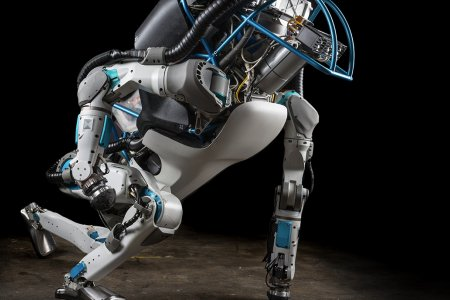
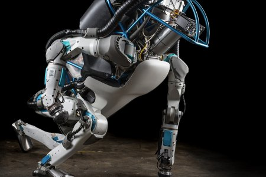
 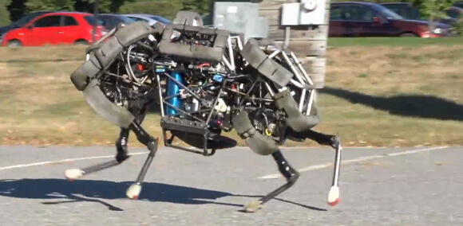
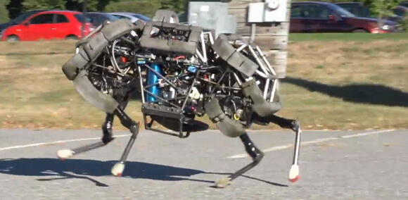